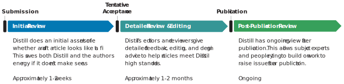
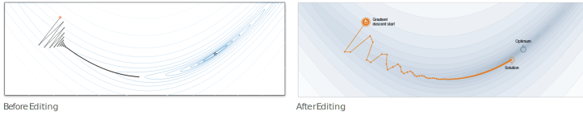

Publishing in the Distill Research Journal
Why Publish in Distill?
| Validation |
Distill articles are "real" scientific publications. Distill is registered with the Library of Congress and CrossRef. ISSN: 2476-0757 DOI: http://doi.org/10.23915/distill |
| Flexibility |
We do not expect you to conform to traditional academic style. The goal should be to best serve your readers. |
| Neutrality |
Distill provides a neutral platform for multiple authors to jointly publish. This is in contrast to a personal blog, where it may feel like the outside contributor gets less credit. |
| Impact |
Distill articles are read by tens of thousands of people. |
Writing a Distill Article
Distill articles must be prepared using our lightweight web framework -- see our guide. Articles must also be released under the Creative Commons Attribution license.
To submit an article, first create a github repository for your article. You can keep it private during the review process if you would like -- just share it with @colah and @shancarter. Then email review@distill.pub to begin the process.
Distill handles all reviews and editing through GitHub issues. Upon publication, the repository is made public and transferred to the @distillpub organization for preservation. This means that the reviews of published work are always public. (It is at the authors discretion whether they share reviews of unpublished work, either during the process or if it gets rejected.)
The Distill Review Process
Academic review is a trade-off between lots of interests. Costs are paid by the editors, the reviewers, and even the authors. The situation is further complicated by the fact that most review service is a chore, reluctantly done out of a sense of obligation.
As a young journal treading into new ground, Distill doesn’t know what the best way to handle review is. Instead of committing to a detailed policy a priori, we commit to taking the interests of all parties extremely seriously and continually seeking the best compromise.
In general, we expect this to mean publishing a smaller number of articles and working very hard to handle those well. In order to focus our effort on a small number of articles, we divide our review process into two stages. A faster initial review narrows down articles to a smaller number for us to focus on, saving all parties time. These two stages are supplemented by the possibility of further post-publication review by interested parties.

(These time estimates depend a lot on how responsive the authors are.)
Both stages or review are led by an editor. The editor will bring in external peer reviewers based on their discretion as to what perspectives are needed. Traditionally, journals handle research articles differently from that of a review or tutorial. As Distill publishes academic artifacts that don't clearly fit within these lines, we expect to need to think carefully about what kind of review process makes sense.
For all publications, Distill will review for outstanding communication and design, in addition scientific quality and integrity. Distill provides expert editing to help authors improve their writing and diagrams.

While our review process does take time and energy, we strive to ensure it is well worth your effort.
Conflicts of Interest
Like many young journals, Distill has a small number of editors who are deeply involved in the journals domain. As such, it is common to see many papers where one or more editors have a conflict of interest.
To address this, Distill does not allow any editor to lead the review process for a paper on which they are an author or where they feel unable to be objective for another reason. If no editors are available to review an article, a member of the steering committee may lead the review process, or deputize someone to do so on their behalf.
More broadly, there will be many cases where Distill's editors have some kind of relationship with an author. While most relationships do not amount to a conflict of interest, they should be disclosed in the review process.
Ethics Concerns (eg. Plagiarism, Misconduct, etc.)
Distill takes ethics concerns very seriously. Please email ethics@distill.pub to raise a concern, or reach out to Distill's editors or steering committee members individually if that feels more comfortable.
As a young journal, Distill does not have established policies or procedures for every issue we may run into. As issues arise we’ll give consideration to the policies of journals we respect (eg. PLOS), the recommendations of the Committee on Publication Ethics, community norms, and the philosophy of the Open Science movement.